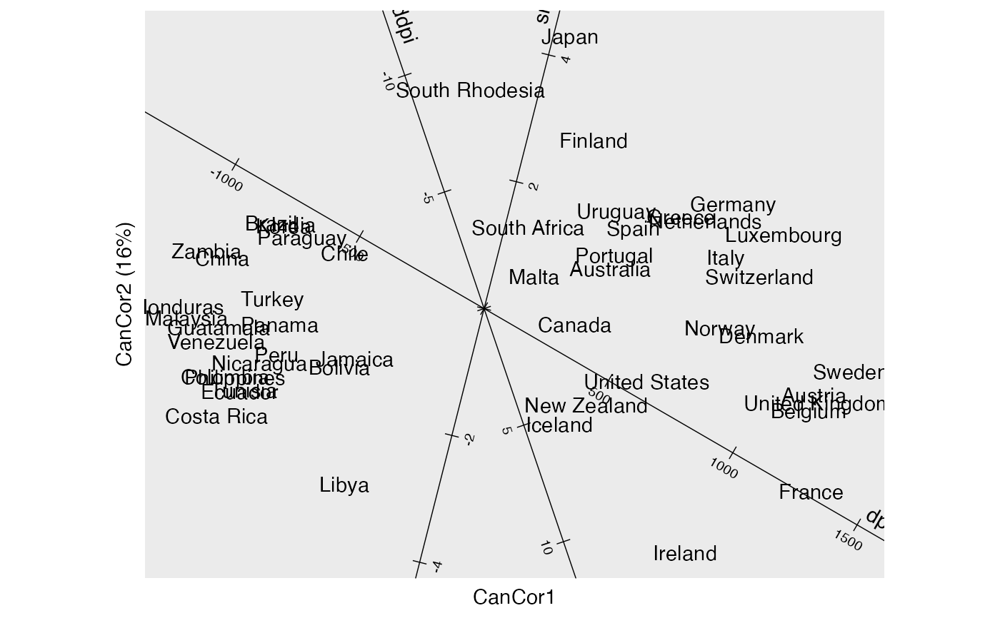
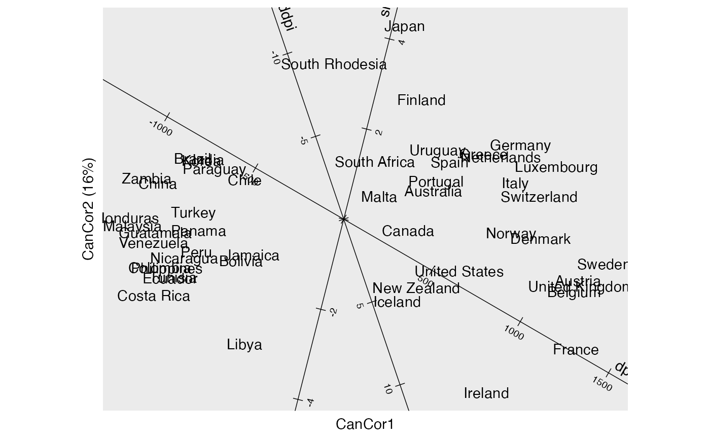

Functionality for canonical correlation ('cancor') objects
methods-cancor.RdThese methods extract data from, and attribute new data to, objects of class 'cancor' from the candisc package.
# S3 method for cancor
as_tbl_ord(x)
# S3 method for cancor
recover_rows(x)
# S3 method for cancor
recover_cols(x)
# S3 method for cancor
recover_inertia(x)
# S3 method for cancor
recover_coord(x)
# S3 method for cancor
recover_conference(x)
# S3 method for cancor
augmentation_rows(x)
# S3 method for cancor
augmentation_cols(x)
# S3 method for cancor
augmentation_coord(x)
# S3 method for cancor
supplementation_rows(x)
# S3 method for cancor
supplementation_cols(x)Arguments
- x
An ordination object.
Details
ter Braak (1990) recommends two families of biplots for the canonical
correspondence analysis of data matrices \(X\) and \(Y\). For the first,
using structural correlations, either the interset correlations of \(X\)
(equivalent to principal coordinates) are plotted with the intraset
correlations of \(Y\) (standard coordinates) or vice-versa, so that their
product recovers the correlation matrix \(XY'\). Where cc is the output
of candisc::cancor() on centered and scaled data matrices, these are
obtained from cc$structure. For consistency with the canonical variate
scores cc$scores available as supplementary points, ordr takes rows and
columns from the intraset correlations cc$structure$X.xscores and
cc$structure$Y.yscores, on which no intertia is conferred. ter Braak's
biplots can then be recovered by balancing the inertia across
the two factors.
References
ter Braak CJF (1990) "Interpreting canonical correlation analysis through biplots of structure correlations and weights". Psychometrika 55(3), 519--531. doi: 10.1007/BF02294765
See also
Other methods for singular value decomposition-based techniques:
methods-ca,
methods-lda,
methods-lra,
methods-mjca,
methods-prcomp,
methods-princomp,
methods-svd
Examples
# data frame of life-cycle savings across countries
class(LifeCycleSavings)
#> [1] "data.frame"
head(LifeCycleSavings)
#> sr pop15 pop75 dpi ddpi
#> Australia 11.43 29.35 2.87 2329.68 2.87
#> Austria 12.07 23.32 4.41 1507.99 3.93
#> Belgium 13.17 23.80 4.43 2108.47 3.82
#> Bolivia 5.75 41.89 1.67 189.13 0.22
#> Brazil 12.88 42.19 0.83 728.47 4.56
#> Canada 8.79 31.72 2.85 2982.88 2.43
# canonical correlation analysis of age distributions and financial factors
savings_cancor <- candisc::cancor(
LifeCycleSavings[, c("pop15", "pop75")],
LifeCycleSavings[, c("sr", "dpi", "ddpi")]
)
# wrap as a 'tbl_ord' object
(savings_cancor <- as_tbl_ord(savings_cancor))
#> # A tbl_ord of class 'cancor': (52 x 2) x (53 x 2)'
#> # 2 coordinates: can1 and can2
#> #
#> # Rows (standard): [ 52 x 2 | 0 ]
#> can1 can2 |
#> |
#> 1 0.983 -0.184 |
#> 2 -0.970 -0.244 |
#> 3 -0.563 0.404 |
#> 4 -1.47 -0.873 |
#> 5 -1.45 -1.03 |
#>
#> #
#> # Columns (standard): [ 53 x 2 | 0 ]
#> can1 can2 |
#> |
#> 1 -0.491 0.856 |
#> 2 -0.955 -0.264 |
#> 3 -0.0473 0.141 |
#> 4 -1.20 -0.162 |
#> 5 -0.514 0.333 |
#>
# recover canonical weights
get_rows(savings_cancor, elements = "active")
#> can1 can2
#> pop15 0.9829821 -0.1837015
#> pop75 -0.9697929 -0.2439299
get_cols(savings_cancor, elements = "active")
#> can1 can2
#> sr -0.4910379 0.8557760
#> dpi -0.9545172 -0.2637266
#> ddpi -0.0473377 0.1407737
head(get_rows(savings_cancor))
#> can1 can2
#> pop15 0.9829821 -0.1837015
#> pop75 -0.9697929 -0.2439299
#> Australia -0.5625360 0.4039025
#> Austria -1.4715254 -0.8733232
#> Belgium -1.4477236 -1.0314729
#> Bolivia 0.6458541 -0.5890527
head(get_cols(savings_cancor))
#> can1 can2
#> sr -0.4910379 0.8557760
#> dpi -0.9545172 -0.2637266
#> ddpi -0.0473377 0.1407737
#> Australia -1.1975826 -0.1623640
#> Austria -0.5144855 0.3326099
#> Belgium -1.1260475 0.2801166
# augment canonical weights with row names and centers
(savings_cancor <- augment_ord(savings_cancor))
#> # A tbl_ord of class 'cancor': (52 x 2) x (53 x 2)'
#> # 2 coordinates: can1 and can2
#> #
#> # Rows (standard): [ 52 x 2 | 2 ]
#> can1 can2 | .name .supplement
#> | <chr> <lgl>
#> 1 0.983 -0.184 | 1 pop15 FALSE
#> 2 -0.970 -0.244 | 2 pop75 FALSE
#> 3 -0.563 0.404 | 3 Australia TRUE
#> 4 -1.47 -0.873 | 4 Austria TRUE
#> 5 -1.45 -1.03 | 5 Belgium TRUE
#> # … with 47 more rows
#> #
#> # Columns (standard): [ 53 x 2 | 2 ]
#> can1 can2 | .name .supplement
#> | <chr> <lgl>
#> 1 -0.491 0.856 | 1 sr FALSE
#> 2 -0.955 -0.264 | 2 dpi FALSE
#> 3 -0.0473 0.141 | 3 ddpi FALSE
#> 4 -1.20 -0.162 | 4 Australia TRUE
#> 5 -0.514 0.333 | 5 Austria TRUE
#> # … with 48 more rows
# row-standard biplot of structure correlations
savings_cancor %>%
confer_inertia("cols") %>%
ggbiplot(aes(label = .name, color = .matrix), elements = "active") +
theme_bw() +
geom_origin() +
geom_unit_circle(linetype = "dotted") +
geom_rows_vector() +
geom_rows_text_radiate() +
geom_cols_point() +
geom_cols_text_repel() +
scale_color_brewer(limits = c("rows", "cols"), type = "qual") +
expand_limits(x = c(-1, 1), y = c(-1, 1))
 # column-standard biplot of structure correlations
savings_cancor %>%
confer_inertia("rows") %>%
ggbiplot(aes(label = .name, color = .matrix), elements = "active") +
theme_bw() +
geom_origin() +
geom_unit_circle(linetype = "dotted") +
geom_cols_vector() +
geom_cols_text_radiate() +
geom_rows_point() +
geom_rows_text_repel() +
scale_color_brewer(limits = c("rows", "cols"), type = "qual") +
expand_limits(x = c(-1, 1), y = c(-1, 1))

# symmetric biplot of structure correlations
savings_cancor %>%
confer_inertia("symmetric") %>%
ggbiplot(aes(label = .name, color = .matrix), elements = "active") +
theme_bw() +
geom_origin() +
geom_unit_circle(linetype = "dotted") +
geom_cols_vector() +
geom_cols_text_radiate() +
geom_rows_vector() +
geom_rows_text_radiate() +
scale_color_brewer(limits = c("rows", "cols"), type = "qual") +
expand_limits(x = c(-1, 1), y = c(-1, 1))
# column-standard biplot of structure correlations
savings_cancor %>%
confer_inertia("rows") %>%
ggbiplot(aes(label = .name, color = .matrix), elements = "active") +
theme_bw() +
geom_origin() +
geom_unit_circle(linetype = "dotted") +
geom_cols_vector() +
geom_cols_text_radiate() +
geom_rows_point() +
geom_rows_text_repel() +
scale_color_brewer(limits = c("rows", "cols"), type = "qual") +
expand_limits(x = c(-1, 1), y = c(-1, 1))

# symmetric biplot of structure correlations
savings_cancor %>%
confer_inertia("symmetric") %>%
ggbiplot(aes(label = .name, color = .matrix), elements = "active") +
theme_bw() +
geom_origin() +
geom_unit_circle(linetype = "dotted") +
geom_cols_vector() +
geom_cols_text_radiate() +
geom_rows_vector() +
geom_rows_text_radiate() +
scale_color_brewer(limits = c("rows", "cols"), type = "qual") +
expand_limits(x = c(-1, 1), y = c(-1, 1))